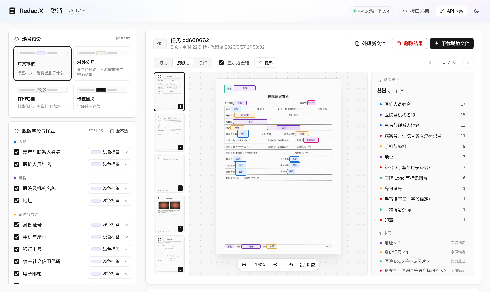
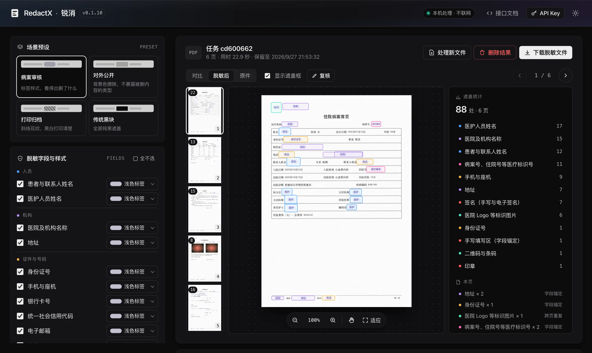
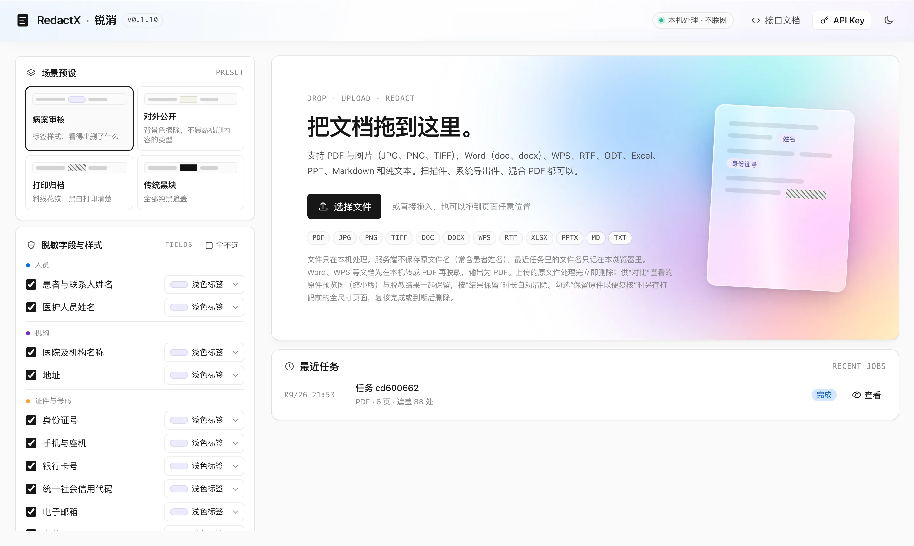

七种打码样式
浅色标签、背景色擦除、代号替换、安全马赛克、斜线花纹、图像修复、黑色块。所有样式都先擦除原像素，再绘制外观，输出栅格化重建，文字层与元数据一并清除。
上传 PDF、图片或 Word 文档，自动识别患者与医护人员姓名、医院名称、证件号、电话、病案号、手写填写区、签名、印章等内容，按指定样式打码，输出栅格化重建的 PDF。
在线演示是临时开放的演示环境：需要向项目负责人索取 API Key（打开后点右上角“API Key”填入）；请只上传合成或测试文件，不要上传真实病案。


勾选要遮盖的类型、为每类单独选样式；场景预设一键切换。
患者与联系人姓名（含少数民族、英文姓名）、医护人员姓名、正文叙述里的人名
医院及机构名称、单位名称、地址
身份证、护照、港澳台通行证、军官证、手机与座机、银行卡、统一社会信用代码、邮箱、车牌、微信号
病案号、住院号、门诊号、医保卡号、床号、检验与影像编号
手写填写区、手写与电子签名、红章与淡色章
医院 Logo、二维码与条码；院名水印在识别前整页去除
浅色标签、背景色擦除、代号替换、安全马赛克、斜线花纹、图像修复、黑色块。所有样式都先擦除原像素，再绘制外观，输出栅格化重建，文字层与元数据一并清除。
在页面上拖出新框补遮；保留原件的任务还能删框、改框、改类型，保存后只重新打码改动的页。快捷键与修改标记便于大批量标注。
扫描页打码后再识别一遍，补打遗漏的号码与姓名；文字层页默认不做，省下数倍时间。
污渍、印章压住字段名时，按本单位表单的模板推算字段位置，照常遮盖内容。模板用空白表单一条命令生成。
上传的原文件处理完立即删除，服务端不保存原文件名；结果按保留时长自动清除，也可随时删除。标注导出默认关闭，开启须设置 API Key 并记审计日志。
异步任务、同步小文件、打码报告（每处遮盖的类型、来源与坐标，不含原文）与预览图接口，便于接入病案系统批量处理。
两遍处理：第一遍逐页识别并收集可靠的姓名、号码，第二遍在全文追踪它们、打码并自检。
合成评估集：虚构病案按 13 种形态生成，覆盖系统导出、白纸与牛皮纸扫描、横放、复印机分层压缩、低质量扫描、手机拍照与各类证件号写法。
剩余漏遮主要是压在临床照片上的院名水印（照片须保留，暂不处理）。合成数据与真实病案有差距，真实文档上的表现以本单位抽检为准；复核台可在交付前人工补遮。
Apple M4、16 GB，纯 CPU。
服务只绑定 127.0.0.1；处理过程不联网。模型文件在准备阶段下载一次。
git clone https://github.com/haydncho/RedactX-OSS.git
cd RedactX-OSS
uv venv .venv --python 3.12
uv pip install --python .venv/bin/python -e ".[dev,ner-export]"
.venv/bin/python deploy/ner_export.py # 约 100 MB，写入 models/ner/deploy/container/run.sh # 首次运行构建镜像，端口 8090也可以直接本机运行：.venv/bin/uvicorn service.app:app --host 127.0.0.1 --port 8000。镜像为标准 OCI 格式，也可用 Docker 构建（deploy/container/Containerfile）。
访问 http://127.0.0.1:8090 上传文件；接口文档在 /docs。建议 16 GB 内存（容器限制 6 GB、6 核）。
curl -F file=@病案.pdf -F 'options={"verify":"auto"}' http://127.0.0.1:8090/v1/jobs
# → {"job_id": "job_…", "status": "queued"}
curl http://127.0.0.1:8090/v1/jobs/job_… # 轮询状态
curl -o 脱敏.pdf http://127.0.0.1:8090/v1/jobs/job_…/result